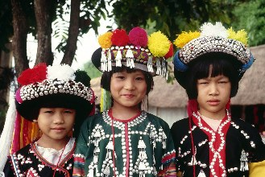
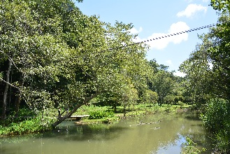

Mae Hong Son (แม่ฮ่องสอน)
Cidadezinha com apenas 7.000 habitantes, próxima da fronteira com Mianmar, há 883km ao norte de Bangcoc e 251km à noroeste de Chiang Mai.O território da província de Mae Hong Son era parte do estado de Mawkmai, um dos estados Shan fundados em 1767 por Hsai Khiao, membro de uma família nobre de Chiang Mai.
Como resultado da Comissão de Fronteira Anglo Siamesa de 1892-93, o distrito de Mae Hong Son foi cedido ao Sião (atual Tailândia), mas os distritos adjacentes de Möngmaü e Mehsakun, também reivindicados pelo Sião, foram mantidos como parte da Birmânia Britânica.
Não deixe de caminhar pelo lago na área central da cidade e visitar os templos ao seu redor, eles são os mais belos da cidade.
Para uma boa vista panorâmica, suba o morro do Wat Phra That Doi Kong Mu (ou Wat Phai Doi).
Como chegar à Mae Hong Son
* De avião: vôos de 30 minutos desde Chiang Mai estão disponíveis através da Nok Air e da Kan Air. Há também 2 vôos semanais diretos de Bangcoc, com a Happy Air.* De carro: há 2 opções de rodovias desde Chiang Mai, e ambas levam de 5 a 6 horas de carro. A Rota 1095 via Pai (280 km) tem uma paisagem melhor, enquanto a a Rota 108 via Mae Sariang (350 km) é um percurso mais fácil, embora mais longo.
* De ônibus: serviços regulares de ônibus ligam Mae Hong Son à Chiang Mai (Arcade Bus Terminal), e a viagem leva entre 7 e 8 horas. Uma opção melhor são os microônibus que saem da mesma estação em Chiang Mai, que levam apenas 5 horas e meia mas custam ฿$ 250. Se estiver indo de ônibus, pode escolher entre a rota norte (Pai) ou sul (Mae Sariang). A rota norte é um pouco mais rápida. Há um ônibus noturno de Chiang Mai ao Northern Bus Terminal de Bangcoc (Moh Chit), que leva umas 15 horas. A Sombat Tour, opera uma linha direta diária com ar condicionado de Bangcoc à Mae Hong Son, saindo do terminal de Chatuchak (Mochit 2), às 15:00, 17:00 e 18:00. A passagem custa ฿$ 720.
* De trem: a estação de trem mais próxima fica em Chiang Mai. Você pode chegar até lá e depois seguir para Mae Hong Son com as opções anteriores.
As atrações de Mae Hong Son
Vila da Montanha Hmong
Wat Jong Kum (ou Chonh Kham)
Uma obra de arte dos artesãos Thai Yai em estilo birmanês, construída em 1827 pelo líder Shan Phaya Singhanataraj. O viharn abriga uma
imagem chamada Long Por To, feita em estilo birmanês.
Wat Jong Klang (ou Chong Klang)
Templo construído no mesmo período que o Wat Jong Kum.
O templo abriga também um museu com imagens e portas talhadas com pessoas e animais da Vesantara Jataka*, talhada por artesãos birmaneses e trazida da Birmânia em 1857.
* Vesantara Jataka é uma apadāna, uma das biografias das vidas passadas de Buda.
O templo abriga também um museu com imagens e portas talhadas com pessoas e animais da Vesantara Jataka*, talhada por artesãos birmaneses e trazida da Birmânia em 1857.
* Vesantara Jataka é uma apadāna, uma das biografias das vidas passadas de Buda.
Lago Mae Hong Son
Lago na região central da cidade, com alguns templos e um parque ao seu redor.
Wat Phra That Doi Kong Mu (ou Wat Phai Doi)
Templo em estilo birmanês no alto de um morro, com uma ótima vista da cidade e das montanhas do lado birmanês da fronteira, especialmente durante o pôr do sol.
Há 2 chedis de 2 líderes, um para Jong Tongsue, de 1860, e outro para Paya Singhanat Raja, de 1874.
Há 2 chedis de 2 líderes, um para Jong Tongsue, de 1860, e outro para Paya Singhanat Raja, de 1874.
Wat Phra Non
Construído em 1871 por Phra Nang Mie, esposa de Phraya Singhanathracha, que foi o 1º a governar Mae Hong Son.
A atração mais significativa deste tempo é um Buda deitado em estilo birmanês, com 12m de comprimento.
Na área do templo, haviam 4 chedis onde estavam reliquías de Phraya Singhanathracha, Phra Nang Mie (o 2º a governar Mae Hong Song), Phraya Phitak Syam Khet (o 3º) e sua esposa, e Phraya Phisarn Hong Son Bur (o 4º) e sua esposa.
Os chedis dos 2 primeiros líderes foram retirados.
A atração mais significativa deste tempo é um Buda deitado em estilo birmanês, com 12m de comprimento.
Na área do templo, haviam 4 chedis onde estavam reliquías de Phraya Singhanathracha, Phra Nang Mie (o 2º a governar Mae Hong Song), Phraya Phitak Syam Khet (o 3º) e sua esposa, e Phraya Phisarn Hong Son Bur (o 4º) e sua esposa.
Os chedis dos 2 primeiros líderes foram retirados.
Local: Phadung Muaytor Road, aos pés do monte Kong Mu.
Voltar à lista
Vila Karen ou Vila das Mulheres Girafa
Há diferentes tribos das montanhas na região de Mae Hong Son. Uma delas é a dos Karen.
Aqui, as mulheres solteiras vestem saias brancas e as casadas vermelhas. Na tribo, são as mulheres que pedem a mão do homem em casamento, o que acontece quando elas têm por volta de 17-18 anos.
Os Karen costumam mascar nozes betel, o que deixa seus dentes com uma coloração preta e avermelhada.
Você pode pegar uma tour até a vila, mas será mais fácil encontrar essa tour em Chiang Mai ou Chiang Rai.
Aqui, as mulheres solteiras vestem saias brancas e as casadas vermelhas. Na tribo, são as mulheres que pedem a mão do homem em casamento, o que acontece quando elas têm por volta de 17-18 anos.
Os Karen costumam mascar nozes betel, o que deixa seus dentes com uma coloração preta e avermelhada.
Você pode pegar uma tour até a vila, mas será mais fácil encontrar essa tour em Chiang Mai ou Chiang Rai.
Local: Huaysuetaow Village, há 12km da cidade (a mais fácil de ser alcançada), Nai Soy Village (onde os primeiros imigrantes Karen
chegaram), e Nam Pieng Din Village, há 14km de carro e mais 30 minutos de barco.
Voltar à lista
Tribo da Montanha Lisu
São conhecidos por seus vestidos coloridos usados pelas mulheres.
Suas origens são Mianmar e sul da China, e pertencem ao grupo linguístico tibeto-birmanês.
Suas origens são Mianmar e sul da China, e pertencem ao grupo linguístico tibeto-birmanês.

Vila da Montanha Hmong
São originários, em sua maior parte, do sul da China, e pertencem ao grupo linguístico austro-tailandês.
Em termos de roupas são os menos chamativos entre as vilas, já que apenas alguns usam suas roupas típicas, porém dizem que são os mais atenciosos e carinhosos.
Em termos de roupas são os menos chamativos entre as vilas, já que apenas alguns usam suas roupas típicas, porém dizem que são os mais atenciosos e carinhosos.
Vila Mae Aw
Há apenas 10 minutos de carro de Ban Ruam Thai, fica a vila chinesa de Mae Aw, onde os Kuomintang* fugiram do regime comunista da China nos anos 1950.
A maioria dos moradores da vila é descendente de soldados Kuomintang e até hoje é possível ver as marcas dessa origem.
A maioria das casas da vila é feita com terra, o que lembra o antigo estilo de construções do sul da China.
Kuomintang, literalmente Partido Nacionalista Chinês, é um partido político fundado em Xangai em 1919, cujos partidários tiveram que fugir da China devido a perseguição do Partido Comunista Chinês, se refugiando na então província chinesa de Formosa (atual Taiwan).
A maioria dos moradores da vila é descendente de soldados Kuomintang e até hoje é possível ver as marcas dessa origem.
A maioria das casas da vila é feita com terra, o que lembra o antigo estilo de construções do sul da China.
Kuomintang, literalmente Partido Nacionalista Chinês, é um partido político fundado em Xangai em 1919, cujos partidários tiveram que fugir da China devido a perseguição do Partido Comunista Chinês, se refugiando na então província chinesa de Formosa (atual Taiwan).
Local: há menos de 2km da fronteira com a Birmânia.
Voltar à lista
Wat Kam Ko
Importante templo construído em 1890. Na entrada do templo há estátuas de singha (seres mitológicos) em estilo tailandês.

Wat Hua Wieng (ou Hua Wiang)
O 2º templo mais antigo da cidade, fundado em 1863.
Seu nome é uma referência à sua localização ao norte da cidade, e significa "cabeça da cidade" (hua significa cabeça e wieng cidade).
A construção mais importante é o viharn Prachao Phalalakhaeng, que abriga uma imagem chamada Prachao Phalalakhaeng, uma réplica de uma imagem de Mandalay, Mianmar.
Seu nome é uma referência à sua localização ao norte da cidade, e significa "cabeça da cidade" (hua significa cabeça e wieng cidade).
A construção mais importante é o viharn Prachao Phalalakhaeng, que abriga uma imagem chamada Prachao Phalalakhaeng, uma réplica de uma imagem de Mandalay, Mianmar.
Local: rua Singharachbamrung, 15, T. Jong Kum.
Voltar à lista
Parque Nacional da Cachoeira Pha Sua (อุทยานแห่งชาติ ถ้ำปลา - น้ำตกผาเสื่อ)
Parque nacional cobrindo uma área de mais de 488km² na área que separa a Tailândia de Mianmar.
Dentro do parque está o Doy-Larn, o monte mais alto da província, com 1.918m.
Dentro do parque está o Doy-Larn, o monte mais alto da província, com 1.918m.

Cachoeira Pha Sua
Consiste de 6 níveis e oferece caminhadas interessantes. Tem cerca de 20m de altura e 30 de largura, e é considerada por muitos como a mais bela da província.
Local: há 26km de Mae Hong Son, na rodovia para Pai.
Voltar à lista
Parque Nacional da Cachoeira Mae Surin
Parque com vários tipos de florestas e geografias, com algumas árvores que você dificilmente vê nas partes mais baixas. Os principais destaques do parque são a
Cachoeira Mae Surin (uma das mais altas do país, com 80m de altura), a Cachoeira Dam Khon (ou
Pha Bong, em 3 níveis, com 40m de altura), o Rio Pai (com uma "praia" com camping, rafting e caiaque), o
Nong Khiew (uma larga planície no topo do morro), e o Pui Peak, onde o parque oferece camping.
As acomodações custam ฿$ 800 (casa para 4 pessoas com ventilador, chuveiro, geladeira), ฿$ 1.200 (casa para 7 pessoas com ventilador, chuveiro, geladeira), e ฿$ 2.000 (casa para 15 pessoas, com ventilador, chuveiro, geladeira, mesa de jantar). Há também o aluguel de barracas e acessórios para acampamento.
As acomodações custam ฿$ 800 (casa para 4 pessoas com ventilador, chuveiro, geladeira), ฿$ 1.200 (casa para 7 pessoas com ventilador, chuveiro, geladeira), e ฿$ 2.000 (casa para 15 pessoas, com ventilador, chuveiro, geladeira, mesa de jantar). Há também o aluguel de barracas e acessórios para acampamento.
Local: sub-distrito de Pang Moo.
Voltar à lista